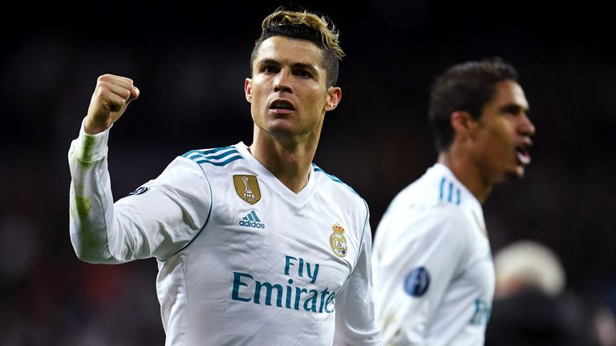

C R I S T I A N O - R O N A L D O
THE FOOTBALL HERO
Cristiano Ronaldo dos Santos Aveiro ,born 5 February 1985 is a Portuguese professional footballer who plays as a
forward for Premier League club Manchester United and captains the Portugal national team. Widely regarded as
one of the greatest players of all time, Ronaldo has won five Ballon d'Or awards and four European Golden
Shoes, the most by a European player. He has won 32 trophies in his career, including seven league titles, five
UEFA Champions Leagues, and the UEFA European Championship. Ronaldo holds the records for most appearances (183)
, goals (140), and assists (42) in the Champions League, goals in the European Championship (14), international
goals (117), and international appearances by a European (189). He is one of the few players to have made over
1,100 professional career appearances,
and has scored over 800 official senior career goals for club and country.

HISTORY & ACHIEVEMENTS
Ronaldo began his senior career with Sporting CP, before signing with Manchester United in 2003,
aged 18, winning the FA Cup in his first season. He would also go on to win three consecutive Premier
League titles, the Champions League and the FIFA Club World Cup; at age 23, he won his first Ballon d'Or.
Ronaldo was the subject of the then-most expensive association football transfer when he signed for Real
Madrid in 2009 in a transfer worth €94 million (£80 million), where he won 15 trophies, including two La
Liga titles, two Copa del Rey, and four Champions Leagues, and became the club's all-time top goalscorer.
He won back-to-back Ballons d'Or in 2013 and 2014, and again in 2016 and 2017, and was runner-up three
times behind Lionel Messi, his perceived career rival. In 2018, he signed for Juventus in a transfer worth
an initial €100 million (£88 million), the most expensive transfer for an Italian club and for a player
over 30 years old.He won two Serie A titles, two Supercoppe Italiana, and a Coppa Italia,
before returning to Manchester United in 2021.